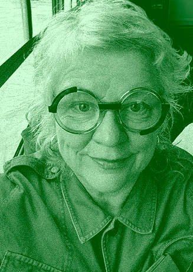

Unloop symposium explores the friction, inconvenience, and
playfulness in the interaction with computational media as inducers
of meaning, reflectiveness and higher-order thinking.
Unloop aims to question the dominant paradigms of Human-Centred Design, that centre on flow and user
satisfaction and that, despite having been contributing to the production of usable artefacts, have also been
leading users into hedonistic loops that reinforce automatic, familiar, and repetitive behaviours.
Unloop takes place in the context of the Break the Loop
research project, explores how friction, inconvenience, and other playful strategies can be used to promote
meaning-making and reflectiveness in users, and to develop tools for designers and other stakeholders to access this
knowledge.

Laura Beloff (Ph.D.) is an internationally acclaimed artist and researcher, who functions in-between artistic production and academic research with a core in artistic methods. Beloff’s concept- and practice-driven research is located in the cross-section of art, science and technology. The research engages with art, humans, environment in affiliation with science and technology, biology, artificial intelligence, robotics, human enhancement and their theories. Beloff’s interest in recent years has focused on investigating the diminishing gap between concepts and disciplines of biology and technology. Currently, she is Associate Professor and Vice-Dean for Artistic and Creative Practices at Aalto University – School of Art, Design and Architecture.
Digital technology and data science are largely built on the premise that data is what matters. In this worldview, unpredictability, disagreement, and the messiness of life appear as errors to be engineered away. This talk explores moments, both in everyday life and in art, where friction emerges and, in doing so, opens up alternative ways of seeing and knowing.
Traditional museum collections can be understood as constructed systems for ordering time, knowledge, and matter. A cabinet of rocks and fossilized bones is often treated as a repository of specimen, data, and scientific heritage. But these collections also preserve and project a worldview - with labels, drawers, catalogues, storage structures, classification systems and institutional traditions. A collection can be seen as a technology for world-making - also when it carries the embedded legacies of colonialism. Consider a bone that spends millennia in soil, decades in a museum as a fossil, and then, today, it is packed away because space is costly and gained profit is unlikely. In such moments, friction surfaces among values, economies, and especially in shifting worldviews. One should also ask what remains out of sight, hidden or lost, when we choose what to keep or what to discard.
Today, technology cannot be disentangled from the material, physical world – everything terrestrial is entangled together. Our contemporary lives unfold between algorithms, data-bases, AI-driven forms of governance, strata, fossils and biological life. Artists respond to this situation by developing strange and speculative tools as artworks hat do not simply represent the world but intervene critically in how it is organized, perceived, and valued. Occasionally these works also explore plausible futures with alternative trajectories.
The symposium will take place at the Faculty of Fine Arts of the University of Porto (FBAUP), where the Break the Loop project is based within the Research Institute in Art, Design and Society (i2ADS).
Unloop calls for extended abstracts by scholars, designers, artists, and students working within the expanded field of this theme. We invite you to submit theoretical, practice-based or experimental research work, considering, but not limited to:
Authors of accepted submissions may choose to present either on-site or remotely. The final programme will be defined according to the number of registrations in each modality.
For any questions, please contact pcardoso@fba.up.pt